Format de compteur ’’Cumulatif’’.
Format de compteur ’’Automatique’’.
Exemple de compteur ’’Automatique’’.
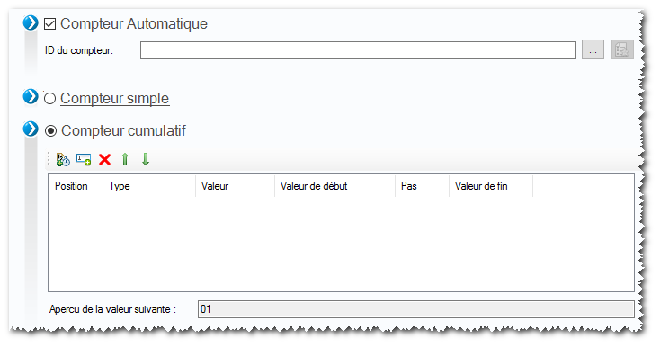
Le compteur cumulatif permet de créer un compteur en associant plusieurs formats de compteur.
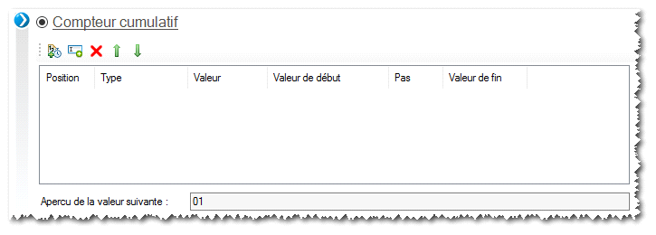
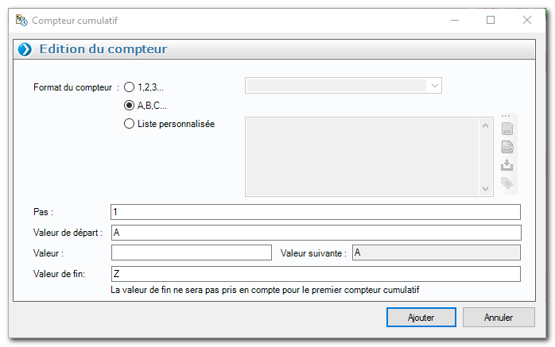
Une fois le compteur créé, cliquer sur ’’Ajouter’’.
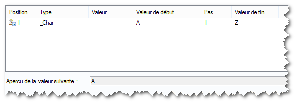
Il est possible d’ajouter ’’x’’ compteurs. Le compteur s’ajoute en dessous du premier et l’aperçu de la valeur suivante est mise à jour.
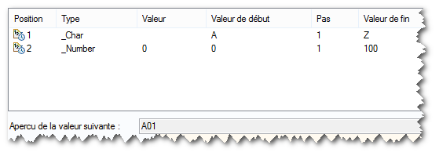
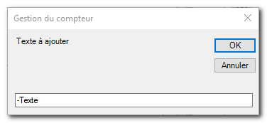
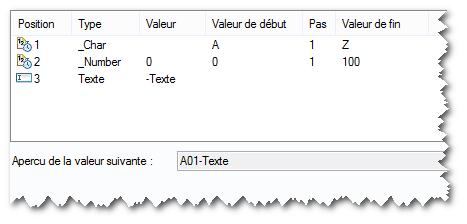
Ce compteur va évoluer comme suit :
A01-Texte ; A02-Texte ; A03-Texte …… A100-Texte ; B01-Texte ; B02-Texte ; etc…
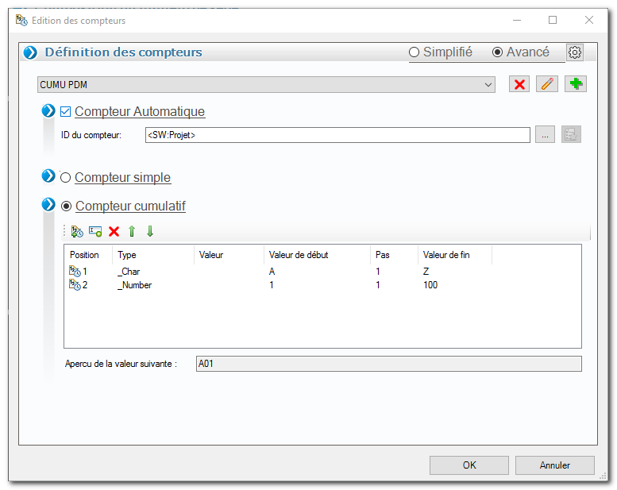
Le compteur automatique permet de créer des compteurs à partir d’une valeur de propriété SOLIDWORKS ou d’un attribut EPDM.
Définir le nom du compteur grâce aux propriétés SOLIDWORKS ou EPDM.
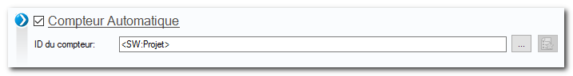
Définir le compteur à utiliser, compteur simple ou cumulatif.
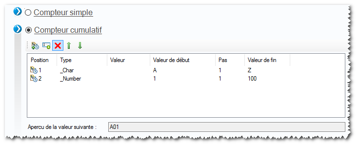
Ce paramètre permet de définir, grâce à des variables, le nom du compteur. Ce nom permettra d’identifier le compteur automatique à incrémenter (s’il existe) ou de le créer avec les valeurs par défaut définies dans le type de compteur (simple ou cumulatif).
On retrouve la liste des compteurs automatiques, créés avec leur valeur, en cliquant sur le bouton :
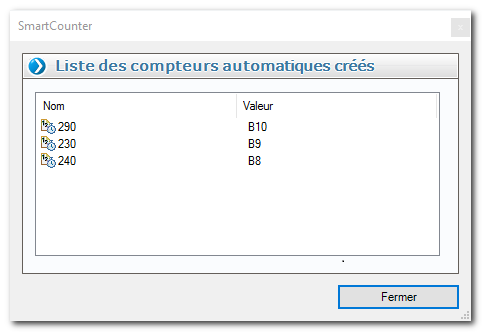
Le bouton permet de définir la propriété.
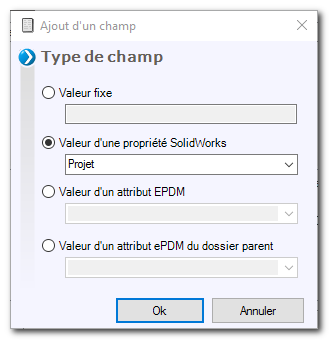
Définir un compteur simple ou un compteur cumulatif.
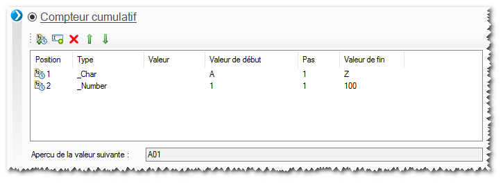
Dans cet exemple de compteur automatique on utilise la propriété ’’Projet’’ avec un compteur cumulatif.
Avec l’utilitaire BatchProperties je crée une propriété ’’Compteur’’ en utilisant le compteur automatique créé.
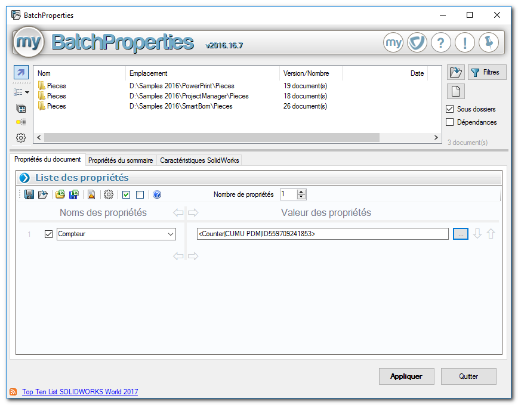
Dans les trois dossiers sélectionnés, les fichiers pièces contiennent la propriété ’’Projet’’ avec une valeur différente.
Paramétrage du compteur automatique utilisé dans cet exemple :
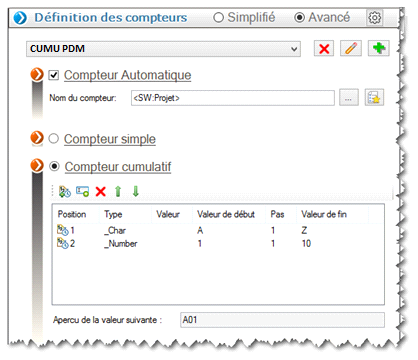
Lors de l’application, trois compteurs vont être créés, avec le même paramétrage (voir image ci-dessus). Un pour chaque valeur de la propriété Projet.
Résultat sur les fichiers :
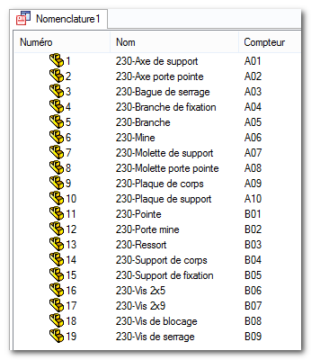
Résultat sur les fichiers :
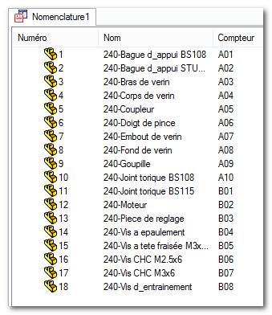
Résultat sur les fichiers :
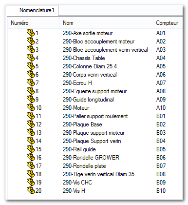
Pour vérifier les compteurs créés, il faut utiliser le bouton .
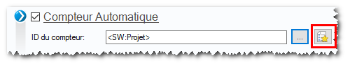
Dans cette liste, on retrouve le nom des trois compteurs créés et la dernière valeur utilisée par chaque compteur.